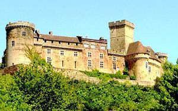
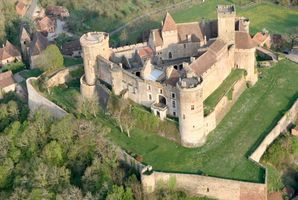
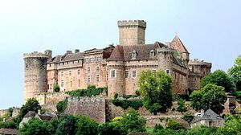
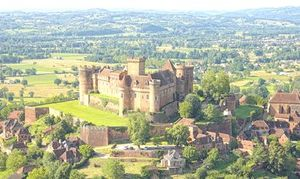
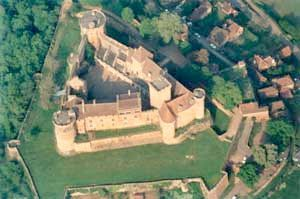
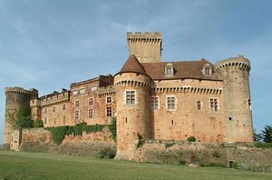
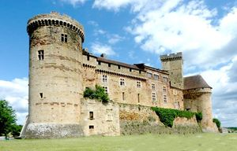
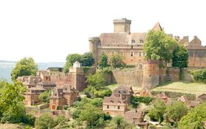
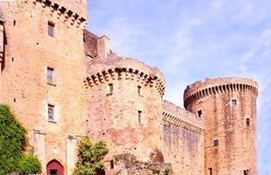

Recensement Jean-Claude Truffet









| Département | 46 — Lot |
| Canton | Biars-sur-Cère |
| Commune | Prudhomat |
| Type d'édifice | Forteresse |
| Période d'origine | XIII |
CASTELNAU-BRETENOUX, en 1248, un baron de Castelnau. En 1280, le baron de Castelnau réussit à obtenir de rendre hommage au roi de France. Maffre III de Castelnau épouse en 1293 Alasie de Calmont d'Olt. Le roi Philippe IV le Bel confirme en 1308 l'acte de Philippe III au profit du baron de Castelnau. En 1315, Hugues III de Castelnau-Calmont (1294 - 1356) hérite des biens des Calmont d'Olt En 1329, Pierre de Castelnau-Bretenoux, frère de Hugues III évêque de Rodez. En 1370, Bégon de Castelnau-Calmont, fils de Hugues III, évêque de Cahors En 1395, à la mort de Jean Ier de Castelnau-Calmont, les biens passent à son neveu, Pons Ier de Castelnau-Caylus (1419) fils d'Hélène de Castelnau et petit-fils d'Hugues III époux de Catherine de Roquefeuil (14 janvier 1396). Il rend hommage en 1396 au roi Charles VI. Lui succède Antoine de Castelnau-Caylus (1419-1465), nommé en 1442 lieutenant général du roi Charles VII en Quercy. En 1530, à la mort de Jean III de Castelnau-Caylus, conformément au testament de Jean II, les biens et titres passent à Pierre Guilhem de Clermont-Lodève (1537), descendant de Pons Ier de Castelnau-Caylus. Jeanne-Thérèse d'Albert de Luynes, baronne de Castelnau, hérite des possessions de la famille. Elle va vendre en 1720 les titres et les terres de Clermont-Lodève. La baronnie de Castelnau est léguée en 1756 au duc Charles d'Albert de Luynes. La baronnie restera dans la famille d'Albert de Luynes jusqu'à la Révolution. En 1830, le duc de Luynes vend la terre de Castelnau à l'ancien avocat Jean-Baptiste Lacoste. Ces terres sont vendues en 1831 à un descendant de l'ancien fermier général, Antoine Molin de Teyssieu. Le château est vendu à Eugène Bacle de Saint-Loup qui le revend en 1853 à Dubousquet de Montanceaux. L'abbé Selves l'achète en 1873. Il est ensuite vendu aux enchères en 1880, à Gustave Deldon de Pradelle. En 1896, le château est vendu au chanteur de l'Opéra-Comique de Paris, Jean Mouliérat. malgré son importance ce château fait chambres d'hôtes
Castelnau-Bretenoux est une belle représentation du château fort médiéval. Il possède tout larsenal de défense pour tenir un siège : muraille, tours défensives, donjon, fossé , une faille naturelle lui permettant dêtre positionné à lextrémité dun plateau rocheux formant un éperon. Cette position idéale lui permet de contrôler les vallées où coulent pas moins de quatre rivières : la Bave, la Cère, affluents de la Dordogne et le Mamoul. Lenceinte basse forme une haute muraille dune longueur de 250 mètres comprenant 6 tours semi-cylindriques et 3 bastions en éperon. Entrée de l'enceinte basse est accessible par une rampe, la seule entrée se situe au sud. Cette dernière se compose dune porte charretière surmontée par des mâchicoulis. Autrefois, une herse et un assommoir complétait cette pièce de défense, une enceinte triangulaire de 80 m de côté environ, renforcée par une fausse-braie. Au nord-est de ce triangle se situe limposante tour militaire dite « Tour de lartillerie » dun diamètre de 14 mètres. Au nord-ouest, il y a également une tour ronde mais de taille moindre. Au Sud, 3 tours cohabitent, dont le donjon du XIIIe siècle culminant à 30 mètres. Sur le front Est du château, un pont dormant enjambe un profond fossé et vous mène au châtelet corps de garde. Ce dernier est composée dune tour dentrée carré avec mâchicoulis et rainures de herse. Le châtelet est néanmoins fortement détérioré, car les tours rondes le précédent ont été partiellement arasées au XVIIe siècle et son pont-levis a été détruit à la fin du XVIIIe siècle.
Famille de Castelnau-Bertenoux
"
Château de Castelnau-Bretenoux